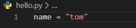
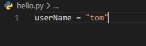
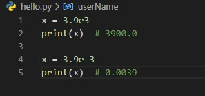

From the Firehose
Типи даних у мові Python
Змінна зберігає певні дані. Назва змінної в Python має починатися з алфавітного символу або зі знака підкреслення і може містити алфавітно-цифрові символи і знак підкреслення. І крім того, назва змінної не повинна збігатися з назвою ключових слів мови Python. Ключових слів не так багато, їх легко запам'ятати: and, as, assert, break, class, continue, def, del, elif, else, except, False, finally, for, from, global, if, import, in, is, lambda, None, nonlocal, not, or, pass, raise, return, True, try, while, with, yield. Наприклад, створимо змінну:
Тут визначена змінна name, яка зберігає рядок "Tom". У Пайтон застосовується два типи найменування змінних: camel case і underscore notation. Camel case має на увазі, що кожне нове підсловом в найменуванні змінної починається з великої літери. наприклад:
Underscore notation має на увазі, що підслова в імені змінної розділяються знаком підкреслення.
І також треба враховувати чутливі до регістру, тому змінні name і Name представлятимуть різні об'єкти. Змінна зберігає дані одного з типів даних. В Python існує безліч різних типів даних, які поділяються на категорії: числа, послідовності, словники, набори:
boolean - логічні значення
TrueилиFalseint - представляє ціле число, наприклад, 1, 4, 8, 50.
float - представляє число с плаваючою крапкою, наприклад, 1.2 или 34.76
complex - комплексні числа
str - рядки, наприклад "hello". В Python 3.x рядки представляють набір символів в кодировці Unicode
bytes - послідовність чисел в діапазоні 0-255
byte array - масив байтів, аналогічний bytes з тою відмінністю, що може змінюватись
list - список
tuple - кортеж
set - неупорядочена колекція унікальних об'єктів
frozen set - те ж саме, що і set, тільки не может змінватись (immutable)
dict - словник, де кожен елемент має ключ і значення
Python є мовою з динамічною типізацією. Він визначає тип даних змінної виходячи із значення, яке їй присвоєно. Так, при присвоєнні рядка в подвійних або одинарних лапках змінна має тип str. При присвоєнні цілого числа Python автоматично визначає тип змінної як int. Щоб визначити змінну як об'єкт float, їй присвоюється дробове число, в якому роздільником цілої і дробової частини є точка. Число з плаваючою крапкою можна визначати в експоненційному запису:
Число float може мати тільки 18 значущих симолів. Так, в даному випадку використовуються тільки два символи - 3.9. І якщо число занадто велике або занадто мало, то ми можемо записувати число у подібній нотації, використовуючи експоненту. Число після експоненти вказує ступінь числа 10, на яке треба помножити основне число - 3.9.